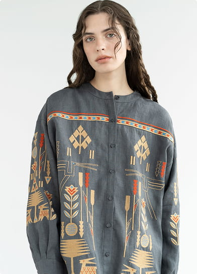

<section class="section hero-section">
  <div class="container hero-container">
    <div class="hero-info">
      <div class="">
        <h1 class="title hero-title">
          Reviving the traditional
          <span class=".hero-title-accent accent">Ukrainian</span> artistry in
          every stitch.
        </h1>
        <a href="#order" class="order-hero-link"
          >Order<svg class="arrow-icon" width="50" height="32">
            <use href="../img/icons/icons.svg#icon-untitled"></use></svg
        ></a>
      </div>
      
    </div>

    <div class="little-icon">
      <svg class="icon-made" width="49" height="49" alt="picture star icon">
        <use href="../img/icons/icons.svg#icon-star"></use>
      </svg>
      <p class="text-icon">all embroidery is made by hand</p>
    </div>
  </div>
</section>
